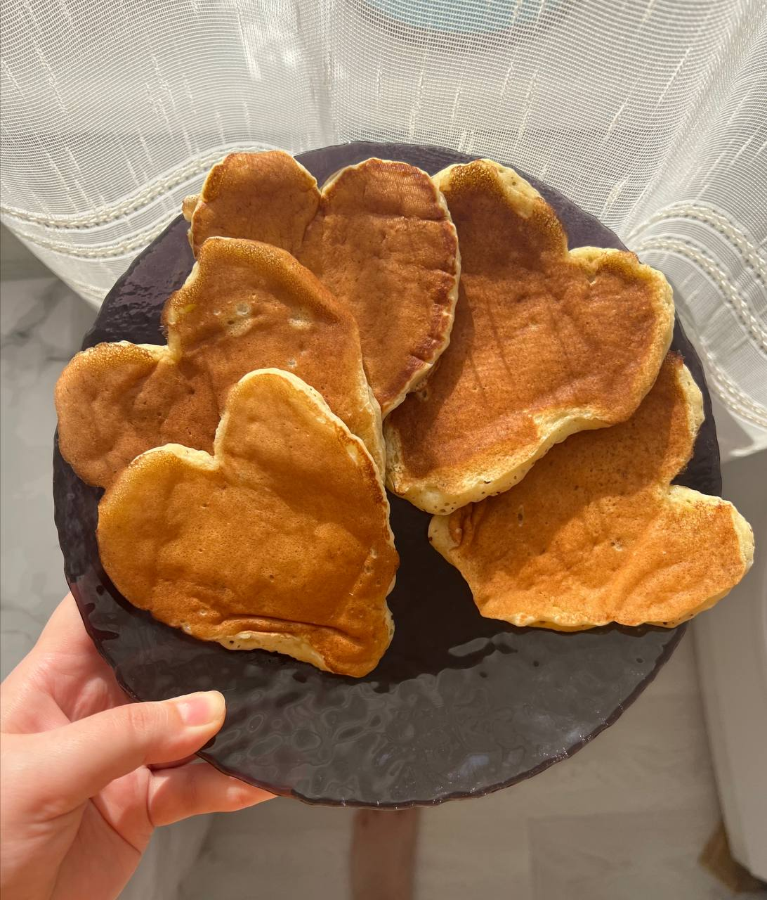
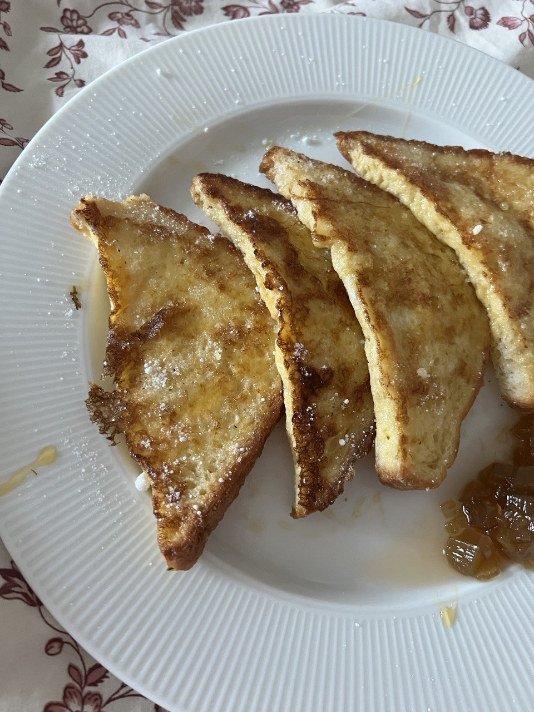
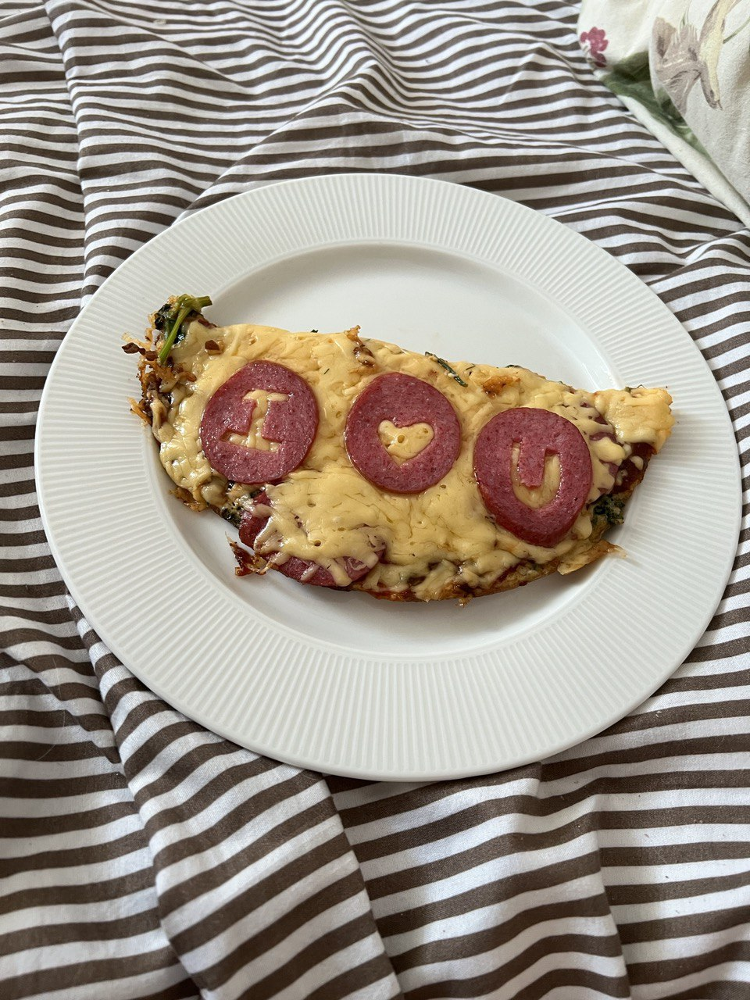
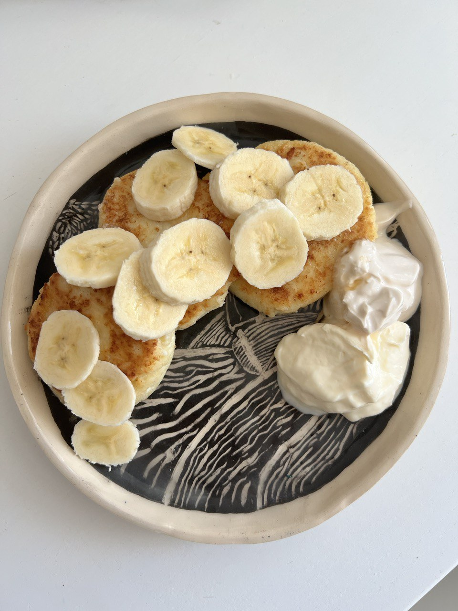
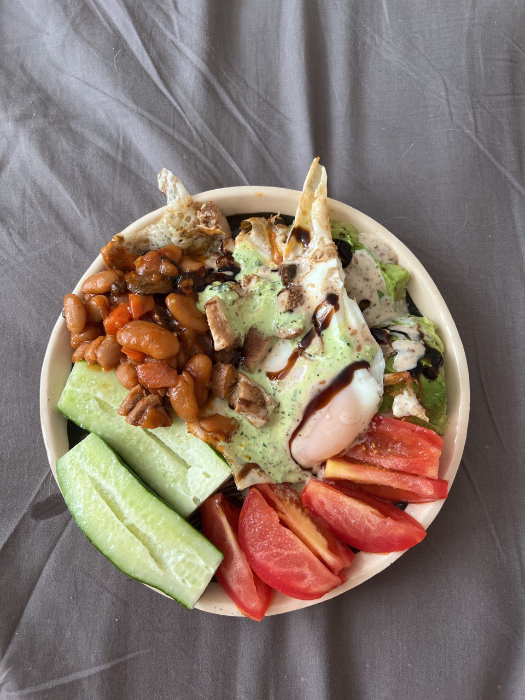
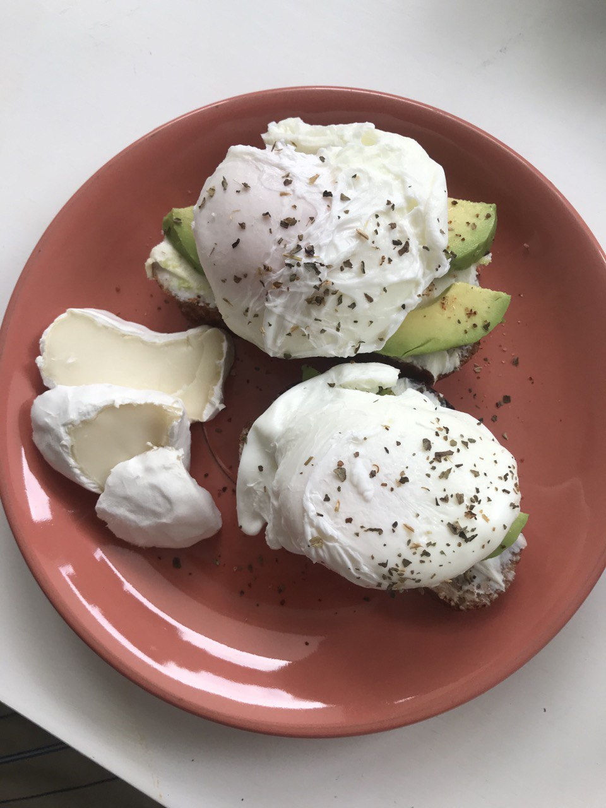
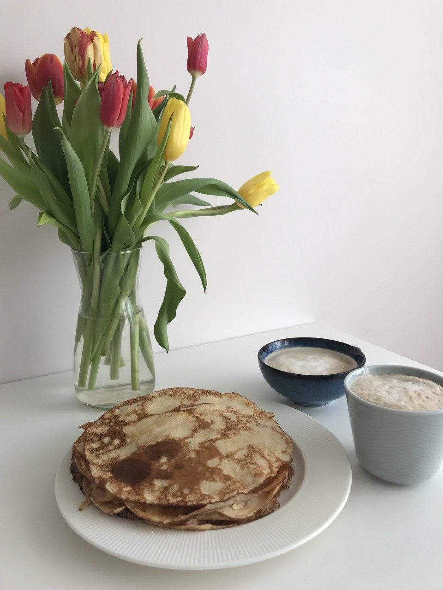

This page contains lovely breakfast ideas which do not require any special ingridients.
Heart Banana Pancakes

These pancakes will be a great meal for St. Valentines day. My amazing wife, Marie, cooked them for me and I was very happy. Here are the ingridients for these meal:
- Banana
- Flour
- Milk
- Baking Soda
- Egg
- Butter
Instuctions:
- Smash bananas.
- Add room temperature milk, flour, an egg, butter and baking soda to bananas.
- Mix thoroughly/
- Pour the mix on the hot pan. Try to create a heart shape.
- Cook until ready. Bon appetit!
French Toasts

French toasts is a simple and tasty meal which can be cooked very quickly. You can make this dish look beautiful by adding sugar powder or your favorite jam. Ingridients:
- White bread
- Milk
- Eggs
- Sugar
Instuctions:
- Cut your bread into triangles.
- Mix milk with eggs and sugar.
- Heat the pan.
- Soak your bread triangles put them on the hot pan.
- Cook until ready. Add jam, honey or sugar powder. Bon appetit!
Salami Advice!

You can carve warm and kind words out of salami, you are definetely going to love it!
Syrniki

Next dish is one of my favorite breakfasts! It is both tasty and fulfilling. Ingridients:
- Cottage cheese
- Rice flour
- Eggs
- Sour cream
Instructuions:
- Mix all the ingridients.
- Form the mix into several patties.
- Cook until ready. Serve with sour cream and something sweet. Bon appetit!
Perfect Omlette

To cook a perfect omlette you need several things: beauty, flavour, nutrition. Here is what you gonna need:
- Eggs
- Beans
- Vegetables
- Sour cream
- Greens
Instructions:
- Cook you eggs, if needed put a lid on your pan, so your eggs cook faster.
- Cut vegetables
- Make a sauce: shred the greens, add them to sourc cream with salt. Use blender to reach a smooth texture.
- Serve it on a plate like on the picture. Bon appetit!
Poached eggs toast

Poached eggs are very interesting to cook and very healthy to eat. You are going to need:
- Eggs
- Toast
- Cream cheese
- Avocado
Instructions:
- To make a poach egg you will need boiling water. Swirl boiling water in a pot (add salt). And gently crack an egg inside
- Cook an egg for 2 minutes and put in on paper towel.
- If you have a hard time boiling your eggs, you can add a little bit of weak vinegar to the water.
- Put some cream cheese on your toast, add cutted avocado and a poached egg, finish with some black pepper and salt on top. Bon appetit!
Crêpes

YOU ARE GOING TO LOVE THESE!
- Milk
- Flour
- Eggs
- Sunflower oil
Instructions:
- Mix all the ingridients.
- Cook on hot pan by pouring a small amount of the mix.
- Master your flipping technique (it may be hard for beginners.
- You can serve these with literally anything you like: veggies, jams, cream chees, sausages, salami, cabbage or even caviar! Bon appetit!